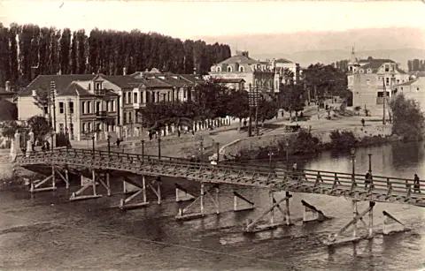
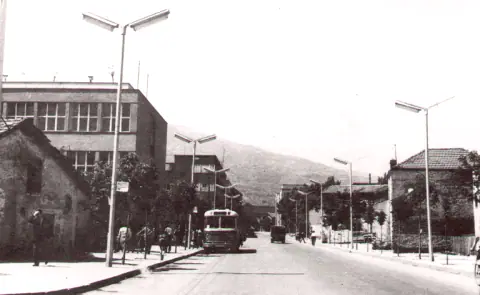
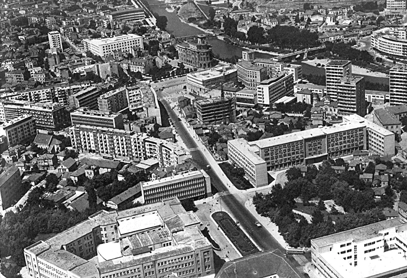

Harta e vjetër orientuese
38 vende të njohura në planin e vjetër të Shkupit. Prekni ose klikoni një pikë për të parë fotografinë.


Shtëpia arabe

Ura e betonit

Pazari i Vjetër

Posta qendrore

Spitali i qytetit

Plazhi i qytetit

Hamami i Daut Pashës


Ura prej druri

Ura e hekurt

Stacioni hekurudhor

Shtëpia e invalidëve

Ura e Gurit

Kisha katolike

Kurshumli Hani

Xhamia e Mustafa Pashës

Banka Kombëtare

Biblioteka Kombëtare

Shtëpia e Oficerëve


Sheshi Maqedonia

Sheshi i Lirisë

Posta 2

Kulla e Sahatit

Panairi


Shën Dimitri

Shën Spasi

Kuvendi i Maqedonisë

Monumenti i luftëtarëve të rënë

Rruga e vjetër kryesore

Konvikti i studentëve

Kalaja e Shkupit

Teatri


Rruga Kočo Racin

Rruga 11 Tetori

Fakulteti Filozofik

Hotel Maqedonia
Panorama
